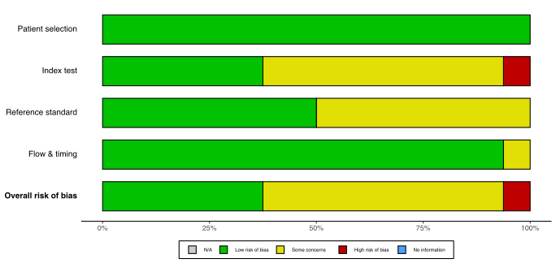
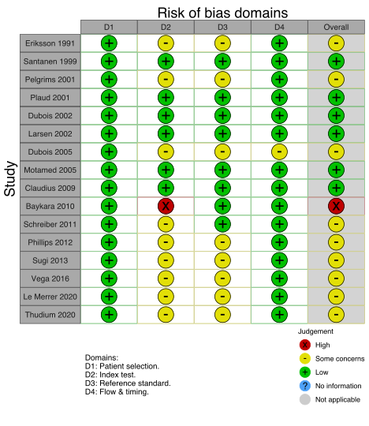
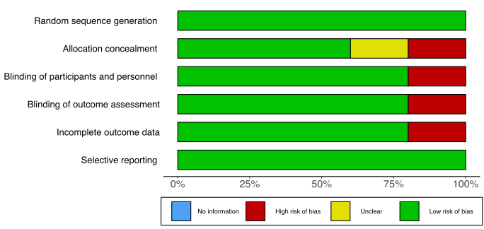
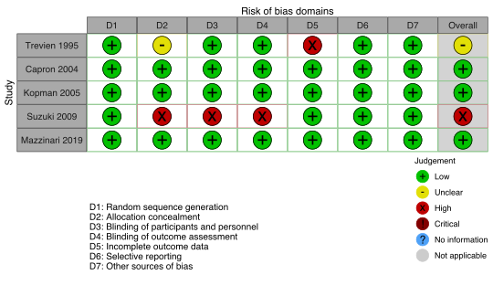

Last updated: 2022-01-10
Checks: 6 1
Knit directory: nmb/
This reproducible R Markdown analysis was created with workflowr (version 1.7.0). The Checks tab describes the reproducibility checks that were applied when the results were created. The Past versions tab lists the development history.
The R Markdown file has unstaged changes. To know which version of the R Markdown file created these results, you’ll want to first commit it to the Git repo. If you’re still working on the analysis, you can ignore this warning. When you’re finished, you can run wflow_publish to commit the R Markdown file and build the HTML.
Great job! The global environment was empty. Objects defined in the global environment can affect the analysis in your R Markdown file in unknown ways. For reproduciblity it’s best to always run the code in an empty environment.
The command set.seed(20211025) was run prior to running the code in the R Markdown file. Setting a seed ensures that any results that rely on randomness, e.g. subsampling or permutations, are reproducible.
Great job! Recording the operating system, R version, and package versions is critical for reproducibility.
Nice! There were no cached chunks for this analysis, so you can be confident that you successfully produced the results during this run.
Great job! Using relative paths to the files within your workflowr project makes it easier to run your code on other machines.
Great! You are using Git for version control. Tracking code development and connecting the code version to the results is critical for reproducibility.
The results in this page were generated with repository version 6135c95. See the Past versions tab to see a history of the changes made to the R Markdown and HTML files.
Note that you need to be careful to ensure that all relevant files for the analysis have been committed to Git prior to generating the results (you can use wflow_publish or wflow_git_commit). workflowr only checks the R Markdown file, but you know if there are other scripts or data files that it depends on. Below is the status of the Git repository when the results were generated:
Ignored files:
Ignored: .DS_Store
Ignored: .Rhistory
Ignored: .Rproj.user/
Ignored: _@@/
Ignored: analysis/index (original).Rmd
Ignored: analysis/kq2 (original 2).Rmd
Ignored: code/helpers.R
Ignored: code/rob_summary.R
Ignored: code/rob_traffic_light.R
Ignored: code/rob_traffic_light_mg.R
Ignored: used_files_dates.txt
Ignored: used_rob_files_dates.txt
Untracked files:
Untracked: .temp.lb
Untracked: analysis/.gitignore
Untracked: code/.gitignore
Untracked: code/misc_calcs.R
Untracked: code/rob_111921 (original).R
Untracked: code/rob_111921.R
Untracked: code/rob_summary_mg.R
Untracked: data/
Unstaged changes:
Modified: analysis/kq1.Rmd
Modified: analysis/reversal.Rmd
Note that any generated files, e.g. HTML, png, CSS, etc., are not included in this status report because it is ok for generated content to have uncommitted changes.
These are the previous versions of the repository in which changes were made to the R Markdown (analysis/kq1.Rmd) and HTML (docs/kq1.html) files. If you’ve configured a remote Git repository (see ?wflow_git_remote), click on the hyperlinks in the table below to view the files as they were in that past version.
| File | Version | Author | Date | Message |
|---|---|---|---|---|
| html | 471e4ea | Mark Grant | 2022-01-10 | kq1 rob quadas figures |
| Rmd | 777fc6f | Mark Grant | 2022-01-07 | add quadas2 |
| html | 777fc6f | Mark Grant | 2022-01-07 | add quadas2 |
| Rmd | 54cecec | Mark Grant | 2022-01-07 | kq1 initial, kq update |
| html | 54cecec | Mark Grant | 2022-01-07 | kq1 initial, kq update |
Table 1. Number of included studies according to age and design.
| Age | Design | N |
|---|---|---|
| Adult | RCT | 5 |
| Fully Paired | 18 | |
| Prospective Cohort | 1 | |
| Total | 24 | |
| RCT: randomized controlled trial. |
Table 2. Included studies, design, enrollment, centers, country, and surgery (see References for citations).
| ID | Study | Analyzed (N) | Centers | Countrya | Surgery |
|---|---|---|---|---|---|
| Adult | |||||
| RCT | |||||
| 719 | Trevien 1995 | 45 | 1 | France | Ortho |
| 1669 | Capron 2004 | 60 | 1 | France | Various |
| 1794 | Kopman 2005 | 50 | 1 | USA | Various |
| 2192 | Suzuki 2009 | 30 | 1 | Japan | Gyn |
| 3316 | Mazzinari 2019 | 46 | 1 | Spain | Various |
| Fully Paired | |||||
| 4140 | Eriksson 1991 | 8 | 1 | Sweden | Neuro |
| 868 | Abdulatif 1997 | 30 | 1 | Egypta | Ortho |
| 7072 | Santanen 1999 | 23 | 1 | Finland | Opth |
| 1429 | Pelgrims 2001 | 25 | 1 | Belgium | Various |
| 1431 | Plaud 2001 | 24 | Canada | Gyn, Ortho | |
| 1476 | Dubois 2002 | 40 | 1 | Belgium | ENT |
| 1518 | Larsen 2002 | 16 | 1 | Denmark | Ortho, Plastic |
| 1769 | Dubois 2005 | 20 | 1 | Belgium | Various |
| 1810 | Motamed 2005 | 20 | 1 | France | Ortho |
| 2120 | Claudius 2009 | 60 | 1 | Denmark | Various |
| 7005 | Baykara 2010 | 122 | 1 | Turkey | Gyn, Gen, Neuro, Ortho, Plastic, Urol |
| 2383 | Schreiber 2011 | 96 | 1 | Germany | Ortho |
| 2479 | Phillips 2012 | 31 | 1 | Australia | Various |
| 5309 | Sugi 2013 | 29 | 1 | Japan | Opth, ENT |
| 2820 | Yamamoto 2015 | 78 | 1 | Japan | Gyn, Ortho, Urol |
| 2952 | Vega 2016 | 10 | 1 | Chile | Various |
| 3464 | Le Merrer 2020 | 52 | 1 | France | Gi, Gen, Plastic, Urol |
| 3537 | Thudium 2020 | 20 | 1 | Germany | Ortho |
| Prospective Cohort | |||||
| 2490 | Thilen 2012 | 150 | 2 | USA | Various, Thor |
| RCT: randomized controlled trial. | |||||
| a Non very high Human Development Index country. | |||||
Table 3. Study characteristics.
Figure 1. Summary risk of bias appraisal (QUADAS-2) for included studies.

Figure 2. Individual study risk of bias appraisal (QUADAS-2) for included diagnostic studies.

Figure 3. Summary risk of bias appraisal for included RCTs reporting clinical outcomes.

Figure 4. Individual study risk of bias appraisal for included RCTs.

R version 4.1.2 (2021-11-01)
Platform: x86_64-apple-darwin17.0 (64-bit)
Running under: macOS Big Sur 10.16
Matrix products: default
BLAS: /Library/Frameworks/R.framework/Versions/4.1/Resources/lib/libRblas.0.dylib
LAPACK: /Library/Frameworks/R.framework/Versions/4.1/Resources/lib/libRlapack.dylib
locale:
[1] en_US.UTF-8/en_US.UTF-8/en_US.UTF-8/C/en_US.UTF-8/en_US.UTF-8
attached base packages:
[1] stats graphics grDevices utils datasets methods base
other attached packages:
[1] meta_5.1-1 formattable_0.2.1 naniar_0.6.1 forcats_0.5.1
[5] stringr_1.4.0 dplyr_1.0.7 purrr_0.3.4 readr_2.1.1
[9] tidyr_1.1.4 tibble_3.1.6 ggplot2_3.3.5 tidyverse_1.3.1
[13] Cairo_1.5-14 countrycode_1.3.0 janitor_2.1.0 kableExtra_1.3.4
loaded via a namespace (and not attached):
[1] nlme_3.1-153 fs_1.5.2 bit64_4.0.5
[4] lubridate_1.8.0 webshot_0.5.2 httr_1.4.2
[7] rprojroot_2.0.2 tools_4.1.2 backports_1.4.1
[10] bslib_0.3.1 metafor_3.0-2 utf8_1.2.2
[13] R6_2.5.1 DBI_1.1.2 colorspace_2.0-2
[16] withr_2.4.3 tidyselect_1.1.1 bit_4.0.4
[19] compiler_4.1.2 git2r_0.29.0 cli_3.1.0
[22] rvest_1.0.2 xml2_1.3.3 sass_0.4.0
[25] scales_1.1.1 systemfonts_1.0.3 digest_0.6.29
[28] minqa_1.2.4 rmarkdown_2.11 svglite_2.0.0
[31] pkgconfig_2.0.3 htmltools_0.5.2 lme4_1.1-27.1
[34] highr_0.9 dbplyr_2.1.1 fastmap_1.1.0
[37] htmlwidgets_1.5.4 rlang_0.4.12 readxl_1.3.1
[40] rstudioapi_0.13.0-9000 jquerylib_0.1.4 generics_0.1.1
[43] jsonlite_1.7.2 vroom_1.5.7 magrittr_2.0.1
[46] Matrix_1.4-0 Rcpp_1.0.7 munsell_0.5.0
[49] fansi_0.5.0 lifecycle_1.0.1 visdat_0.5.3
[52] stringi_1.7.6 whisker_0.4 yaml_2.2.1
[55] CompQuadForm_1.4.3 snakecase_0.11.0 mathjaxr_1.4-0
[58] MASS_7.3-54 grid_4.1.2 parallel_4.1.2
[61] promises_1.2.0.1 crayon_1.4.2 lattice_0.20-45
[64] haven_2.4.3 splines_4.1.2 hms_1.1.1
[67] knitr_1.37 pillar_1.6.4 boot_1.3-28
[70] reprex_2.0.1 glue_1.6.0 evaluate_0.14
[73] modelr_0.1.8 nloptr_1.2.2.3 vctrs_0.3.8
[76] tzdb_0.2.0 httpuv_1.6.5 cellranger_1.1.0
[79] gtable_0.3.0 assertthat_0.2.1 xfun_0.29
[82] broom_0.7.11 later_1.3.0 viridisLite_0.4.0
[85] workflowr_1.7.0 ellipsis_0.3.2